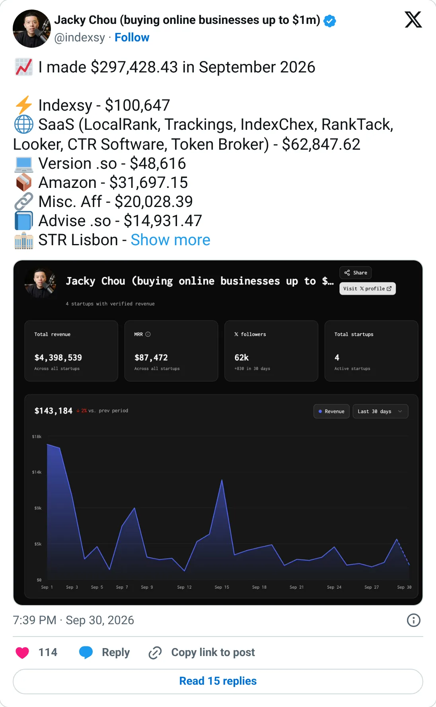

Build this shape
LocalRank.so
Rank tracking for a local Google listing, sold to people who already do the work.
$20.6K MRR
Should you build this
LocalRank tracks and tunes Google Business Profile rankings. The product's verified MRR is $20.6k. The founder's income report is much larger because it mixes the rest of his month; that larger number is not this product. Agencies already pay someone to watch the map pack. A clone works as one vertical — dentists, law firms, clinics — with the report they already send a client. 'All local SEO' is how this becomes a feature of a bigger suite.
Cited from the captured posts, shown below: the key post (Sep 30, 2026) is the source for “Founder's Sep 2026 income report: $297K in total, including $62.8K from his SaaS portfolio (LocalRank and others)”.
Posts this is based on

Founder's Sep 2026 income report: $297K in total, including $62.8K from his SaaS portfolio (LocalRank and others)
Open on X
What the product is
All-in-one AI local-SEO software (Google Business Profile rank tracking and optimization) from a serial SEO entrepreneur. Founded Feb 2025 in Canada. TrustMRR shows $728K all-time revenue. Monthly revenue peaked at $58.4K in Jul 2025.
Public trail
- $27.7KVerified revenue in Apr 2025 (first month tracked) source
- $35.4KVerified revenue in Jun 2025 source
- $58.4KVerified revenue in Jul 2025 (peak month) source
- $54.1KVerified revenue in Sep 2025 source
- $55.9KVerified revenue in Nov 2025 source
- $37.7KVerified revenue in Feb 2026 source
- $41.2KVerified revenue in Apr 2026 source
- $24.6KVerified revenue in Jul 2026 source
- $25.3KVerified revenue in Aug 2026 source
- $20.8KVerified revenue in Sep 2026 (latest full month) source
- •Founder's Sep 2026 income report: $297K in total, including $62.8K from his SaaS portfolio (LocalRank and others) source